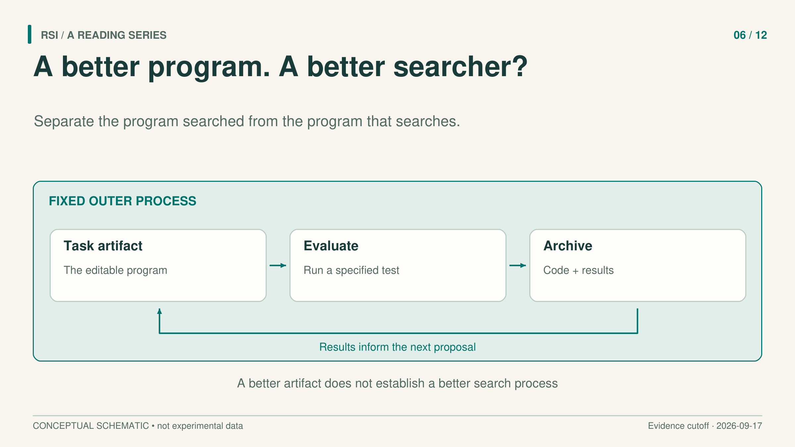
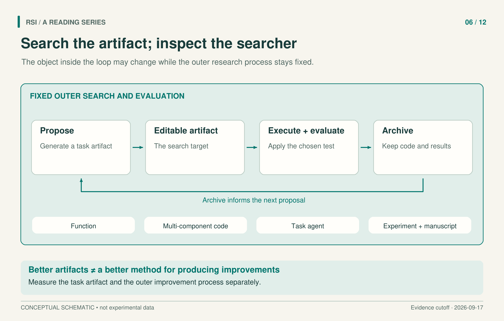

An AI system can discover a useful algorithm, design an agent, or produce a research paper. To understand the kind of improvement involved, follow the artifact into the next run. Does the system reuse a better solution, or has the method that produces solutions also changed?
The distinction matters even when the output is itself an algorithm. A search system might discover a better sorting procedure while continuing to use exactly the same candidate-generation and selection process. The task solution has improved; a claim about the search system requires another observation.
Four research systems make these boundaries concrete: FunSearch, AlphaEvolve, ADAS, and AI Scientist-v2. They automate different portions of research while preserving different rules outside the search.

Give generated code a testable job
FunSearch separates proposing a program from deciding whether it is useful. A frozen Codey language model generates a function. An executor runs it inside a supplied program skeleton. A human-provided evaluation function checks validity and assigns a score. Programs that fail, exceed resource limits, or produce invalid results can be discarded before entering the database.
The skeleton defines which decision the model can change. In online bin packing, it provides the surrounding procedure while the model searches for a heuristic that scores the available bins. In cap-set construction, the evolving function determines the priority of candidate elements. A small editable function can therefore change the behavior of a much larger computation.
The database preserves programs and their scores across attempts. Its “islands” maintain several populations, allowing different approaches to remain available. Later generation can use earlier programs as context. The accumulated state is a collection of task solutions and evaluation history; Codey’s weights stay fixed, and the reported loop does not rewrite the sampler, evaluator, or database-management algorithm.
This arrangement works especially well when evaluation is efficient and informative. A graded score can distinguish promising partial progress from unproductive failures. The authors identify efficient evaluators, useful scoring, and separable program components as favorable conditions in their experience. Their results also used roughly a million language-model samples. Such a search should be interpreted together with the computation that produced it.
Expand the editable program, preserve the evaluation contract
AlphaEvolve explicitly extends the FunSearch approach to more complex programs. Users provide an initial implementation, identify editable regions, and supply evaluation entry points. A language-model ensemble proposes modifications; asynchronous evolution and a database preserve useful candidates. Multiple components and multiple metrics can participate in the search.
The method can also evolve generation prompts in a separate database. Describing it as “only task code changes while all prompts stay fixed” would therefore be inaccurate. The relevant fixed boundary is broader: the reported process still relies on its main controller, frozen base models, and user-supplied evaluation requirements.
Its matrix-multiplication result shows why a performance claim needs an exact unit. The paper reports a rank-48 decomposition for multiplying two 4 × 4 matrices, compared with rank 49 in the reported reference. The decomposition uses complex scalar multiplication. It cannot be rewritten as 48 real multiplications, and the algebraic operation count does not by itself establish a general hardware runtime improvement.
Execution can establish some properties directly, while other criteria may involve model judgments. Combining those signals in one search does not make them equally reliable. A result remains informative when the reader can identify what was executed, what was judged, and which requirement each score represents.

The artifact types are comparison cases. Arrows show a search process, not an inevitable historical progression or evidence that the outer search rewrites itself.
An agent can be the artifact
Automated Design of Agentic Systems, or ADAS, searches programs that organize language-model calls. A task agent can decide which prompts to use, how to pass intermediate results, and how to combine proposed answers. In Meta Agent Search, a fixed meta agent writes the task agent’s forward function, evaluates it on validation tasks, and stores successful designs and scores in an archive.
The word “meta” identifies the designer’s role. It does not establish that the designer improves itself. The process for proposing designs, repairing errors, and maintaining the archive remains fixed. The editable object is the program that will solve tasks.
The distinction is compatible with useful task results. In its reported domain-specific MGSM search, GPT-4 designed candidates and GPT-3.5 executed them. After 30 search rounds, the selected program achieved 53.4 ± 3.5% test accuracy, compared with 39.0 ± 3.4% for the listed LLM Debate baseline. The intervals are 95% bootstrap confidence intervals. This measures the searched task program, not GPT-4 directly answering the questions or an independently measured improvement in the designer.
The same interface also does not imply identical calls or tokens for every program. Search expense and per-task execution expense answer different cost questions. Both matter if the result is used to justify a more capable or more efficient system, and they should be recorded separately.
A research project can be the artifact
AI Scientist-v2 automates a larger workflow: ideas, code experiments, parameter adjustment, ablations, figures, and manuscript production. A progress-management agent organizes staged tree search. Nodes retain experimental plans, code, execution results, and feedback; the system can continue several branches instead of committing to one linear edit sequence.
Different feedback channels still have different jobs. Execution reports what happened in a run. Model judgments help choose promising nodes or identify visible problems in a figure. Peer review evaluates a selected manuscript at another level. None of these signals automatically substitutes for the others.
The workshop study submitted three generated manuscripts. One received review scores of 6, 6, and 7, met the acceptance threshold, and was then withdrawn under a prior agreement. Humans selected initial ideas and later selected submissions from multiple complete outputs. The selected runs themselves had no internal human editing.
These statements describe compatible boundaries: a run can be internally automated while its starting point and eventual submission are human-selected. One success among three selected submissions is consequently not the success probability of an arbitrary launch. Nor does it establish that the system rewrote its research manager and became a better researcher in the next generation.
To test whether the design method improved, a follow-up experiment could preserve its earlier and later versions, give them comparable budgets on problems outside the original search, and evaluate the artifacts each produces. Transferring the best artifact alone tests that artifact’s transfer. Asking both procedures to generate fresh candidates begins to test design ability. This is an experimental suggestion motivated by the distinction, not a measurement that all four papers already performed.
For any automated discovery result, inspect two records: the produced artifact and the procedure that will produce the next one. A better artifact may be enough for the practical task. Evidence for an improving research process additionally needs to identify the changed procedure and test what it can generate under specified conditions.
Selected primary sources
FunSearch · AlphaEvolve · ADAS · AI Scientist-v2.
Adapted from a book whose literature inclusion cutoff is September 17, 2026. Results refer to the versions examined there, not a new literature search.